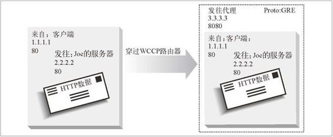

20.6 缓存重定向方法
我们已经讨论过一些将流量重定向到通用服务器的技术，以及一些将流量导向代理或网关的专用技术了。这一节会介绍一些更复杂的、用于缓存代理服务器的重定向技术。这些技术要尽量做到可靠、高效且能感知内容——这样可以将请求分配到可能包含特定内容的位置上去，因此比前面讨论过的那些协议更复杂。
WCCP重定向
Cisco 系统公司开发的 WCCP 可以使路由器将 Web 流量重定向到代理缓存中去。WCCP 负责路由器和缓存服务器之间的通信，这样路由器就可以对缓存进行验证（确保它们已启动且正在运行），在缓存之间进行负载均衡，并将特定类型的流量发送给特定的缓存了。WCCP 版本2（WCCP2）是个开放的协议。这里我们会探讨 WCCP2。
WCCP重定向是怎样工作的
下面是 WCCP 重定向在 HTTP 上工作过程的概述（WCCP 对其他协议的重定向过程也是类似的）。
启动包含了一些支持 WCCP 的路由器和缓存的网络，这些路由器和缓存之间可以相互通信。
一组路由器及其目标缓存构成一个 WCCP 服务组。服务组的配置说明了要将何种流量发往何处、流量是如何发送的以及如何在服务组的缓存之间进行负载均衡。
如果服务组配置为重定向 HTTP 流量，服务组中的路由器就会将 HTTP 请求发送给服务组中的缓存。
HTTP 请求抵达服务组中的路由器时，路由器会（根据对请求 IP 地址的散列，或者“掩码 / 值”的配对策略）选择服务组中的某个缓存为请求提供服务。
路由器向缓存发送请求分组，可以用缓存的 IP 地址来封装分组，也可以通过 IP MAC 转发来实现。
如果缓存无法为请求提供服务，就将分组返回给路由器进行普通的转发。
服务组中的成员会互相交换心跳报文，不断验证对方的可用性。
WCCP2报文
WCCP2 报文有 4 种，如表 20-4 所示。
表20-4 WCCP2报文
| 报 文 名 | 发 送 者 | 所承载的信息 |
| WCCP2_HERE_I_AM | 从缓存发送给路由器 | 这些报文告诉路由器，缓存可以接收流量。报文中包含了该缓存的服务组的所有信息。只要有缓存加入了服务组，它就会将这些报文发送给组里所有的路由器。可以通过这些报文与发送 WCCP2_I_SEE_YOU 报文的路由器进行沟通 |
| WCCP2_I_SEE_YOU | 从路由器发送给缓存 | 这些报文是对 WCCP2_HERE_I_AM 报文的响应。可以通过这些报文对分组转发方式、分配方法（哪个是指定的缓存）、分组返回方法和安全性进行沟通 |
| WCCP2_REDIRECT_ASSIGN | 从指定的缓存发送给路由器 | 这些报文为负载均衡分配任务，它们可以为散列表负载均衡发送桶信息，或为“掩码 / 值”负载均衡发送“掩码 / 值”组对信息 |
| WCCP2_REMOVAL_QUERY | 从路由器发送给在 2.5×HERE_I_AM_T 秒内没有发送过 WCCP2_HERE_I_AM 报文的缓存 | 如果路由器没有周期性地收到 WCCP2_HERE_I_AM 报文，路由器就会发送此报文，以查看是否应该将这个缓存从服务组中删除掉。来自缓存的正确响应为三条完全相同的 WCCP2_HERE_I_AM 报文，中间间隔 HERE_I_AM_T/10 秒 |
WCCP2_HERE_I_AM 的报文格式为：
WCCP Message Header
Security Info Component
Service Info Component
Web-cache Identity Info Component
Web-cache View Info Component
Capability Info Component (可选)
Command Extension Component (可选)
WCCP2_I_SEE_YOU 的报文格式为：
WCCP Message Header
Security Info Component
Service Info Component
Router Identity Info Component
Router View Info Component
Capability Info Component (可选)
Command Extension Component (可选)
WCCP2_REDIRECT_ASSIGN 的报文格式为：
WCCP Message Header
Security Info Component
Service Info Component
Assignment Info Component, or Alternate Assignment Component
WCCP2_REMOVAL_QUERY 的报文格式为：
WCCP Message Header
Security Info Component
Service Info Component
Router Query Info Component
报文组件
每条 WCCP2 报文都由一个首部和一些组件构成。WCCP 首部信息包含报文类型（Here I Am、I See You、Assignment 或Removal Query）、WCCP 版本和报文长度（不包括首部的长度）。
每个组件都以一个描述组件类型和长度的 4 字节首部开始。组件长度不包括组件首部的长度。报文组件如表 20-5 所述。
表20-5 WCCP2报文组件
| 组 件 | 描 述 |
| 安全信息 | 包含安全选项和安全实现。安全选项可以是： WCCP2_NO_SECURITY (0) WCCP2_MD5_SECURITY (1) 如果选项是不安全的（NO），安全实现字段就不存在。如果选项为 MD5，安全实现字段就是一个包含了报文校验和、服务组密码的 16 字节的字段。密码不能超过 8 个字节 |
| 服务信息 | 描述服务组。服务类型 ID 可以使用两个值： WCCP2_SERVICE_STANDARD (0) WCCP2_SERVICE_DYNAMIC (1) 如果服务类型是标准的（STANDARD），服务就是完全由服务 ID 定义的知名服务。HTTP 就是个知名服务。如果服务类型是动态的（DYNAMIC ），就由下列设置来定义服务：优先级、协议、服务标记（决定是否散列）以及端口 |
| 路由器身份信息 | 包含路由器的 IP 地址和 ID，并（通过 IP 地址）列出了路由器想要通信的所有 Web 缓存 |
| Web 缓存身份信息 | 包含了 Web 高速缓存的 IP 地址和重定向散列表映射 |
| 路由器视图信息 | 包含了路由器的服务组视图（路由器和缓存的身份） |
| Web 缓存视图信息 | 包含了 Web 缓存的服务组视图 |
| 分配信息 | 显示了如何将 Web 缓存分配到特定的散列桶中去 |
| 路由器查询信息 | 包含了路由器的 IP 地址、所要查询的 Web 缓存的地址以及服务组中最近从 Web 缓存中收到 Here I Am 报文的路由器 ID |
| 能力信息 | 那些需要广告所支持的分组转发方式、负载均衡和分组返回方式的路由器会使用此信息。那些要让路由器知道它希望使用哪种方法的 Web 缓存也会使用此信息 |
| 替换分配 | 包含了负载均衡的散列表分配信息 |
| 分配图 | 包含了服务组的“掩码 / 值”设置元素 |
| 命令扩展 | Web 缓存用它来告诉路由器它们正在关机。路由器用它来确认缓存是否关闭 |
服务组
服务组（service group）由一组支持 WCCP 的路由器和缓存组成，它们之间可以交换 WCCP 报文。路由器会向服务组中的缓存发送 Web 流量。服务组的配置确定了如何将流量分配到服务组的缓存中去。路由器和缓存会在 Here I Am 和 I See You 报文中交换服务组的配置信息。
GRE分组封装
支持 WCCP 的路由器会用服务器的 IP 地址将 HTTP 分组封装起来，将其重定向到特定的服务器上去。分组封装中还包含了 IP 首部的 proto 字段，用来说明通用路由器封装（GRE）。proto 字段的存在告诉接收代理，它有一个封装的分组。分组被封装起来，客户端的 IP 地址就不会丢失了。图 20-12 显示了 GRE 分组的封装过程。

图 20-12 WCCP 路由器如何修改 HTTP 分组的目的 IP 地址
WCCP的负载均衡
除了路由功能之外，WCCP 路由器还可以在几个接收服务器之间进行负载均衡。WCCP 路由器及其接收服务器会交换心跳报文（heartbeat message），以便相互通知自己处于启动运行状态。如果某特定接收服务器停止发送心跳报文，WCCP 路由器就会将请求流量直接发送到因特网上，而不会将其重定向给那个节点。节点重新提 供服务时，WCCP 路由器会再次开始接收心跳报文，并继续向节点发送请求流量。